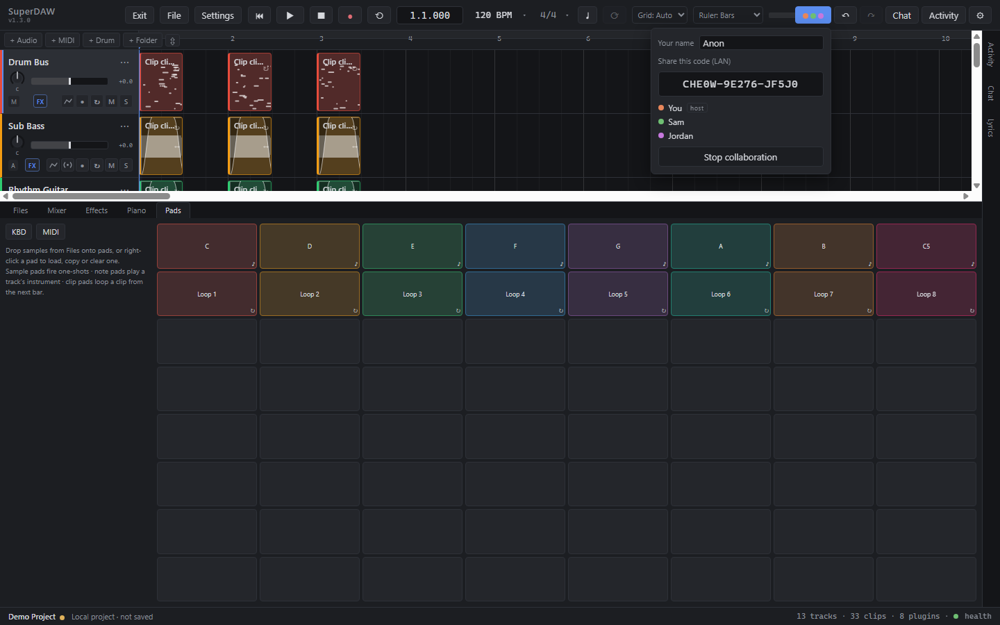
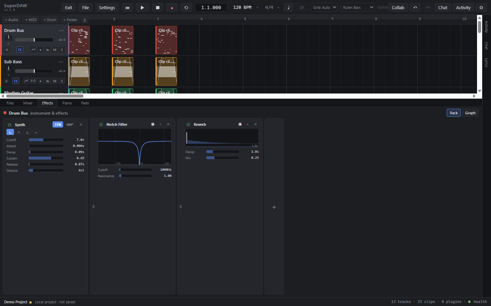
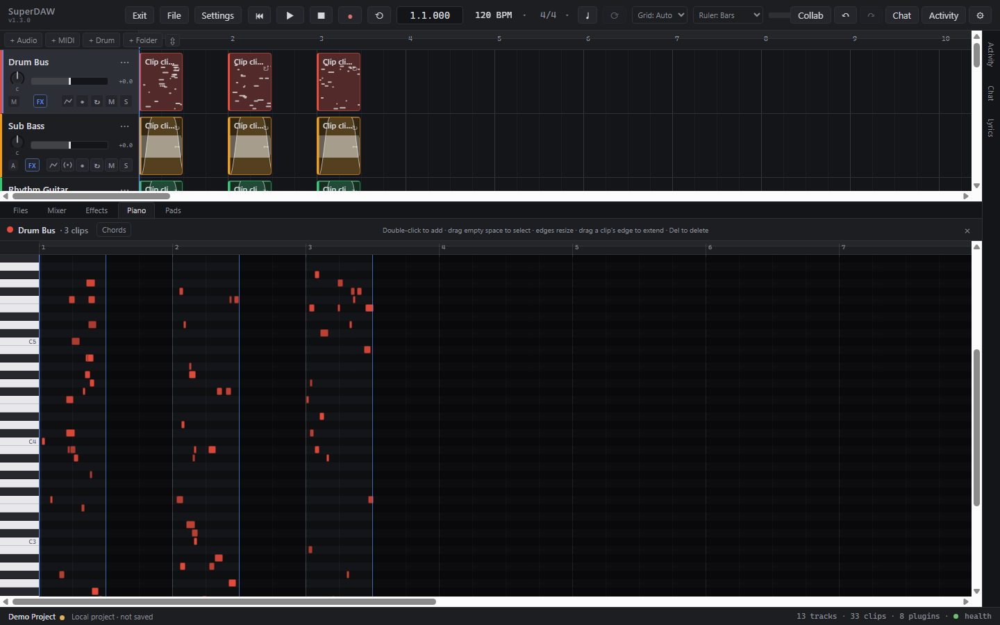
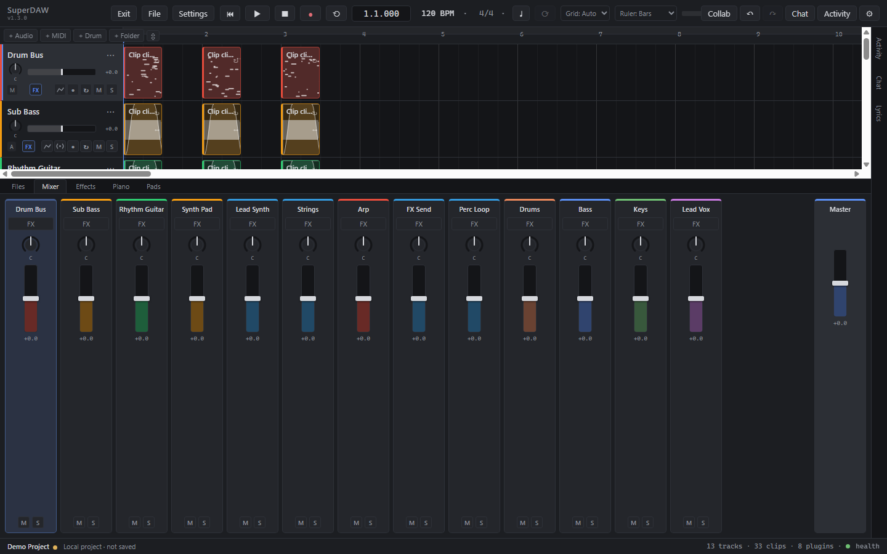
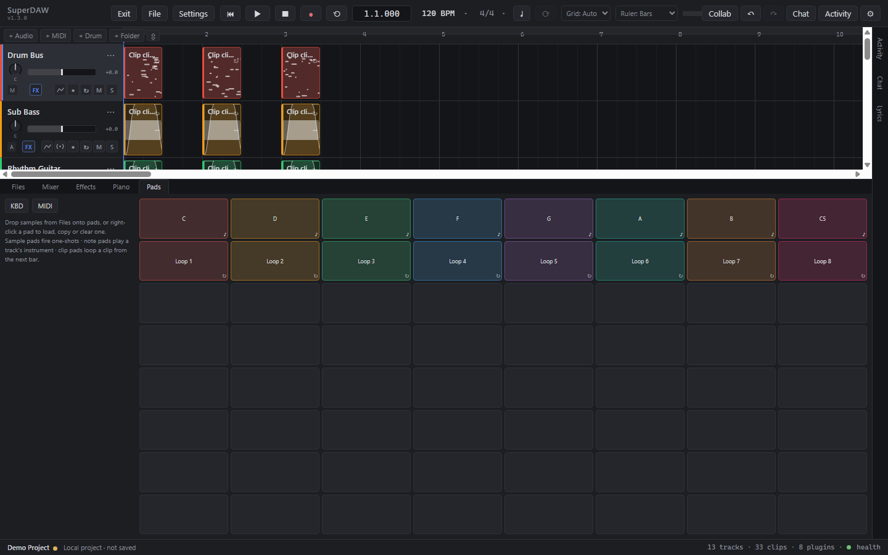
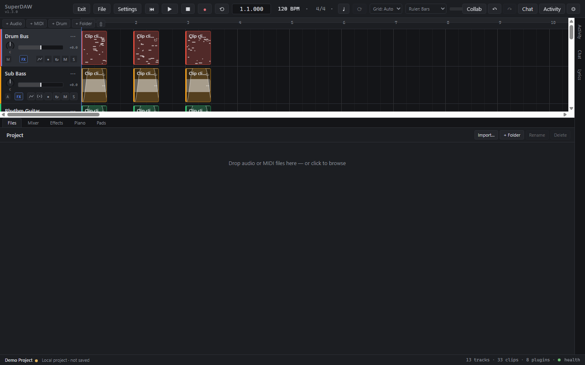

What it refuses to be
Three deliberate absences.
Much of what makes SuperDAW different is what it leaves out. These are design decisions, not gaps.
No
AI features
Nothing generates or "improves" your music. The tool does what you tell it to, and nothing else.
No
Accounts
No sign-up, no login, no profile. Share a short code and your collaborators are in.
No
Cloud dependency
Projects are single .sdaw files on your disk. Nothing you need to open your work lives on a server.
Capabilities
A full workstation, not a demo.
Everything below is synced to your collaborators and undoable.
Real-time collaboration
Several people in one project at once, with live cursors and per-user undo. Edit offline and it resyncs on reconnect.
Hover to see itSession panel
Everything is undoable
Every edit is one serializable operation, so there's no such thing as a change that syncs but can't be undone.
Native low-latency audio
A dedicated WASAPI engine with automatic fallback, and monitoring handled in the same callback that renders output.
VST3 plugins, live
Inserts run in the realtime callback with automatic plugin-delay compensation, so they stay aligned with every other track.
Instruments & effects
Eleven built-in effects — EQ, compressor, limiter, delay, reverb and more — plus an analog synth, sampler and drum kit.
Hover to see itInsert chain
Piano roll & MIDI
Live keyboard input, recording and .mid import, on integer timing that stays deterministic across machines.

Mixer & automation
Per-track fader, pan, mute and solo with a master bus, plus sample-accurate volume automation and track freeze.
Hover to see itMixer
Performance pads
An 8×8 launchpad played by mouse, keyboard or MIDI grid — and the whole session hears your hits.
Hover to see itPad grid
Chat & comments
Project chat plus comment threads pinned to individual clips and tracks, saved inside the project file.
File Bay
Folders and waveform thumbnails. Drag assets onto tracks, or drag files in from the OS to import.
Hover to see itFile Bay
Warp & tempo
Stretch a clip's timing without moving its pitch, or repitch it without changing its length.
Autosave & recovery
Periodic snapshots of unsaved work, and an interface error surfaces as an error — never as a lost project.
Collaboration
LAN-first, peer-to-peer.
One person starts a session, shares a 15-character code, and everyone on the same network joins directly — no server, no accounts, lowest possible latency. Your own edits apply instantly.
- Click Collab → Start. Your machine becomes the host.
- Share the join code. Short enough to paste in chat or read aloud on a call.
- They paste it in. Everyone connects straight to the host, edits sync live.
In a studio or rehearsal room this needs nothing at all — no VPN, no account, not even an internet connection, just the network already in the room. It is as much a tracking tool as a writing one: because every machine records its own inputs into the same session, a room can capture more simultaneous microphones than any one interface has channels for, with an engineer editing the takes as they land.
Working remotely? Until native relay support ships, a mesh VPN like Tailscale puts distant machines on one virtual network, and this same mode works across it unchanged.
What's coming
Full online collaboration.
A relay-based transport is in development, so sessions between distant machines will work with no VPN and no extra account — the same sync, dialed through a relay that never understands your project. Sessions on a shared network already work today and are unaffected by any of this.
Under the hood
The technical picture.
Full architecture notes live in docs/ARCHITECTURE.md.
- Current version
- 1.3.0
- Platform
- Windows desktop (Electron)
- Built with
- Electron 43 · React 19 · TypeScript
- Audio engines
- Web Audio · native WASAPI (experimental)
- Plugin format
- VST3, hosted out-of-process
- Timebase
- Integer ticks, PPQ 960
- Project format
- Single-file
.sdaw - Export
- WAV mixdown, rendered offline
- Accounts required
- None
- AI features
- None, by design
- License
- GNU GPL v3.0 or later
Get it
Install it, or build it yourself.
Installed copies update themselves from GitHub Releases.
# requires Node.js 20 or newer git clone https://github.com/Abzerofin/SuperDAW.git cd SuperDAW npm install npm run dev # desktop app (Electron) npm run dev:web # UI only, in a browser npm run test # core test suite
Licensing
Free software. Your music is yours.
SuperDAW is GPL-3.0-or-later. The copyleft covers this program's source code — not the projects, presets or recordings you make with it. When you use third-party plugins you're responsible for their license terms, which are covered in PLUGIN_LICENSE_TERMS.md.
Support the project
SuperDAW is free, and stays free.
No company, no investors, nothing to upsell you. If it's useful to you, you can help keep it going.